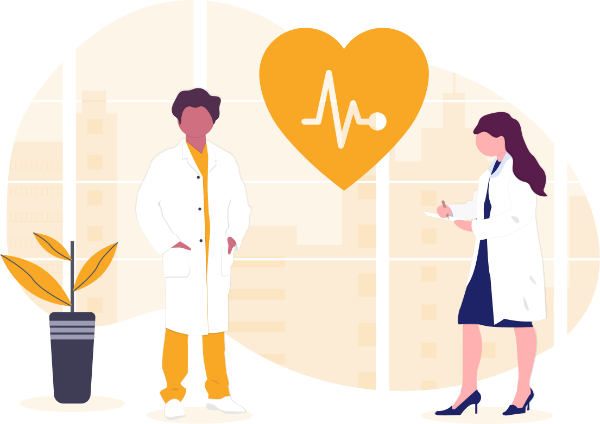
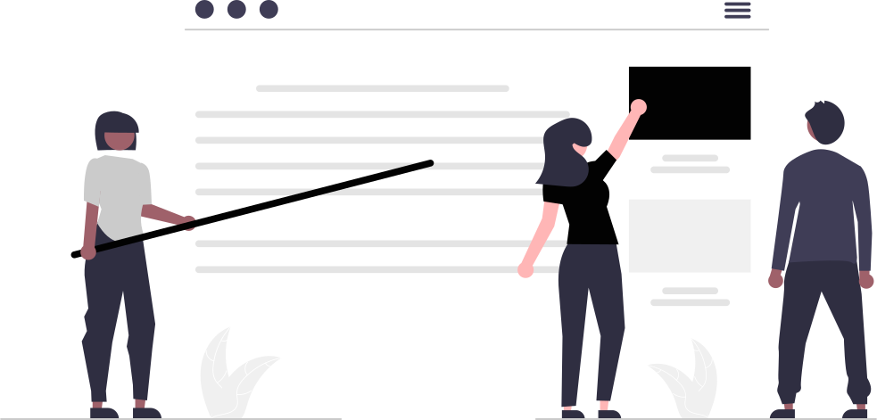

<div class=' primary-container max-h-full    '>


    <div class="flex justify-evenly pb-32 h-screen">
        <div class=" transition-opacity duration-500 space-y-10 flex flex-col m-auto space-x-2 ml-20  ">
            <div class="flex space-x-10 animate-bounce ">
                <h1 class=" uppercase tracking-widest text-8xl ">Med</h1>
                <h1 class="text-8xl text-secondary-100 tracking-widest">Ease</h1>
            </div>
            
        </div>
        
    </div>


    <!-- carousel -->
    <div id="carouselExampleCaptions" class="relative" data-te-carousel-init data-te-carousel-slide>
        <div class="absolute right-0 bottom-0 left-0 z-[2] mx-[15%] mb-4 flex list-none justify-center p-0"
            data-te-carousel-indicators>
            <button type="button" data-te-target="#carouselExampleCaptions" data-te-slide-to="0" data-te-carousel-active
                class="mx-[3px] box-content h-[3px] w-[30px] flex-initial cursor-pointer  border-0 border-y-[10px] border-solid border-transparent bg-white bg-clip-padding p-0 -indent-[999px] opacity-50 transition-opacity duration-[600ms] ease-[cubic-bezier(0.25,0.1,0.25,1.0)] motion-reduce:transition-none"
                aria-current="true" aria-label="Slide 1"></button>
            <button type="button" data-te-target="#carouselExampleCaptions" data-te-slide-to="1"
                class="mx-[3px] box-content h-[3px] w-[30px] flex-initial cursor-pointer border-0 border-y-[10px] border-solid border-transparent bg-white bg-clip-padding p-0 -indent-[999px] opacity-50 transition-opacity duration-[600ms] ease-[cubic-bezier(0.25,0.1,0.25,1.0)] motion-reduce:transition-none"
                aria-label="Slide 2"></button>
            <button type="button" data-te-target="#carouselExampleCaptions" data-te-slide-to="2"
                class="mx-[3px] box-content h-[3px] w-[30px] flex-initial cursor-pointer border-0 border-y-[10px] border-solid border-transparent bg-white bg-clip-padding p-0 -indent-[999px] opacity-50 transition-opacity duration-[600ms] ease-[cubic-bezier(0.25,0.1,0.25,1.0)] motion-reduce:transition-none"
                aria-label="Slide 3"></button>
        </div>
        <div class="relative w-full overflow-hidden after:clear-both after:block after:content-['']">
            <div class="relative float-left -mr-[100%] w-full transition-transform duration-[600ms] ease-in-out motion-reduce:transition-none"
                data-te-carousel-active data-te-carousel-item style="backface-visibility: hidden"
                data-te-interval="2000">
                
                <div class="absolute inset-x-[15%] bottom-5 hidden py-5 text-center text-white md:block">

                </div>
            </div>
            <div class="relative float-left -mr-[100%] hidden w-full transition-transform duration-[600ms] ease-in-out motion-reduce:transition-none"
                data-te-carousel-item style="backface-visibility: hidden" data-te-interval="2000">
                
                <div class="absolute inset-x-[15%] bottom-5 hidden py-5 text-center text-white md:block">

                </div>
            </div>
            <div class="relative float-left -mr-[100%] hidden w-full transition-transform duration-[600ms] ease-in-out motion-reduce:transition-none"
                data-te-carousel-item style="backface-visibility: hidden" data-te-interval="2000">
                
                <div class="absolute inset-x-[15%] bottom-5 hidden py-5 text-center text-white md:block">

                </div>
            </div>
        </div>
        <button
            class="absolute top-0 bottom-0 left-0 z-[1] flex w-[15%] items-center justify-center border-0 bg-none p-0 text-center text-white opacity-50 transition-opacity duration-150 ease-[cubic-bezier(0.25,0.1,0.25,1.0)] hover:text-white hover:no-underline hover:opacity-90 hover:outline-none focus:text-white focus:no-underline focus:opacity-90 focus:outline-none motion-reduce:transition-none"
            type="button" data-te-target="#carouselExampleCaptions" data-te-slide="prev">
            <span class="inline-block h-8 w-8">
                <svg xmlns="http://www.w3.org/2000/svg" fill="none" viewBox="0 0 24 24" stroke-width="1.5"
                    stroke="currentColor" class="h-20 w-20">
                    <path stroke-linecap="round" stroke-linejoin="round" d="M15.75 19.5L8.25 12l7.5-7.5" />
                </svg>
            </span>
            <span
                class="!absolute !-m-px !h-px !w-px !overflow-hidden !whitespace-nowrap !border-0 !p-0 ![clip:rect(0,0,0,0)]">Previous</span>
        </button>
        <button
            class="absolute top-0 bottom-0 right-0 z-[1] flex w-[15%] items-center justify-center border-0 bg-none p-0 text-center text-white opacity-50 transition-opacity duration-150 ease-[cubic-bezier(0.25,0.1,0.25,1.0)] hover:text-white hover:no-underline hover:opacity-90 hover:outline-none focus:text-white focus:no-underline focus:opacity-90 focus:outline-none motion-reduce:transition-none"
            type="button" data-te-target="#carouselExampleCaptions" data-te-slide="next">
            <span class="inline-block h-8 w-8">
                <svg xmlns="http://www.w3.org/2000/svg" fill="none" viewBox="0 0 24 24" stroke-width="1.5"
                    stroke="currentColor" class="h-20 w-20">
                    <path stroke-linecap="round" stroke-linejoin="round" d="M8.25 4.5l7.5 7.5-7.5 7.5" />
                </svg>
            </span>
            <span
                class="!absolute !-m-px !h-px !w-px !overflow-hidden !whitespace-nowrap !border-0 !p-0 ![clip:rect(0,0,0,0)]">Next</span>
        </button>
    </div>

    <!-- Predict  -->
    <div class="flex justify-evenly py-32 mx-10">
        <div class=" relative  shadow-2xl shadow-black rounded-2xl  w-[50%] ">
            <video src="assets\Videos\predict_process.mp4" muted autoplay loop
                class=" w-full overflow-hidden rounded-2xl  "></video>
        </div>

        <div class="justify-center text-center mx-auto px-8 space-y-24">
            <h1 class="text-5xl ">Using Machine Learning to Predict Disease</h1>
            <button routerLink='disease-predictor'
                class="px-20 py-3 bg-gray-400 text-xl text-primary-50 hover:bg-secondary-100 hover:text-primary-80">PREDICT</button>

        </div>

    </div>


    <!-- Blog -->

    <div class="flex justify-evenly bg-secondary-100 py-32">

        <div class="justify-center text-center mx-auto space-y-24">
            <h1 class="text-5xl  text-primary-50">Contribute and Communicate</h1>
            <button routerLink='disease-predictor'
            routerLink="blog"
                class="px-20 py-3 bg-gray-300 text-xl text-primary-50 hover:bg-primary-50 hover:text-secondary-50">BLOG</button>

        </div>
        

    </div>

    <!-- Doctor  -->
    <div class="flex justify-evenly  py-32">

        
        <div class="justify-center text-center mx-auto space-y-24">
            <h1 class="text-5xl ">Specialist/Doctors</h1>
            <button routerLink='disease-predictor'
                class="px-20 py-3 bg-gray-400 text-xl text-primary-50 hover:bg-secondary-100 hover:text-primary-80">Specialist</button>
        </div>


    </div>

</div>